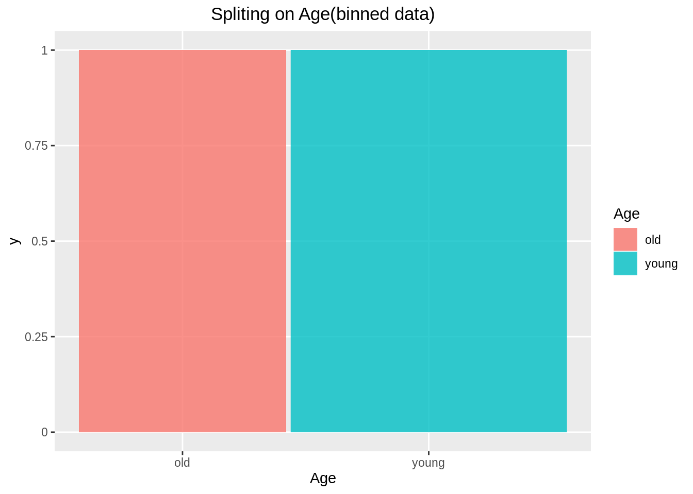
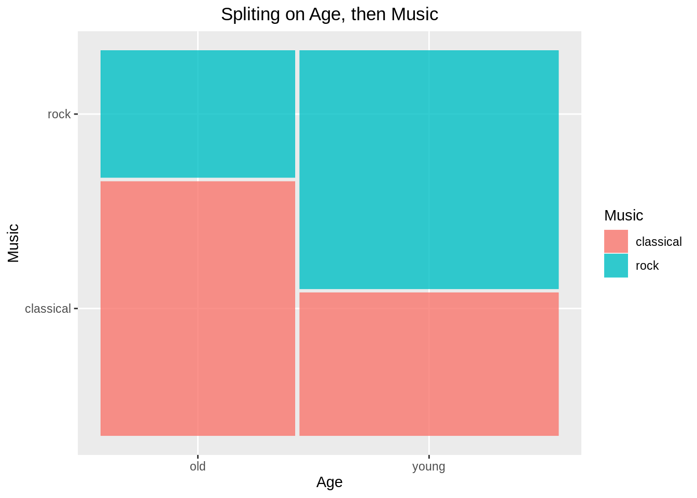
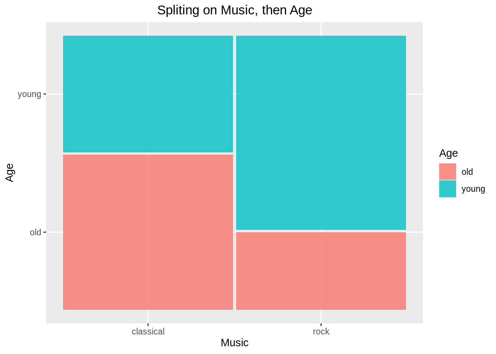
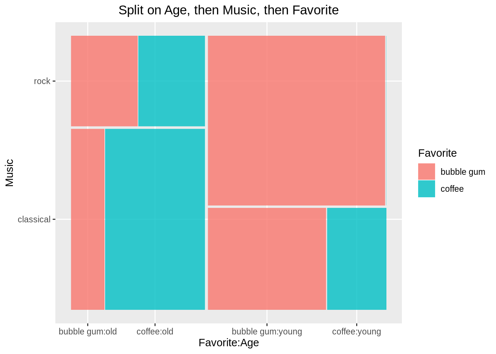
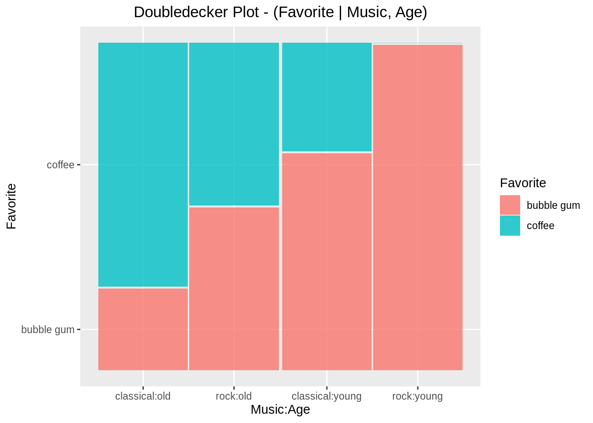
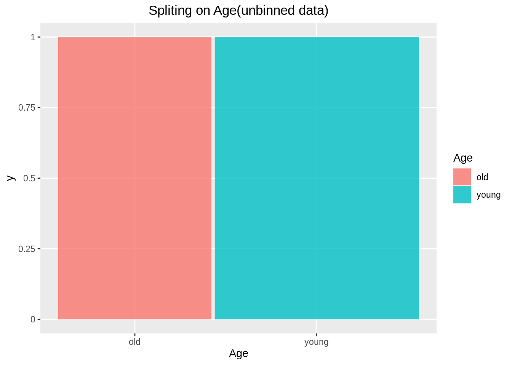
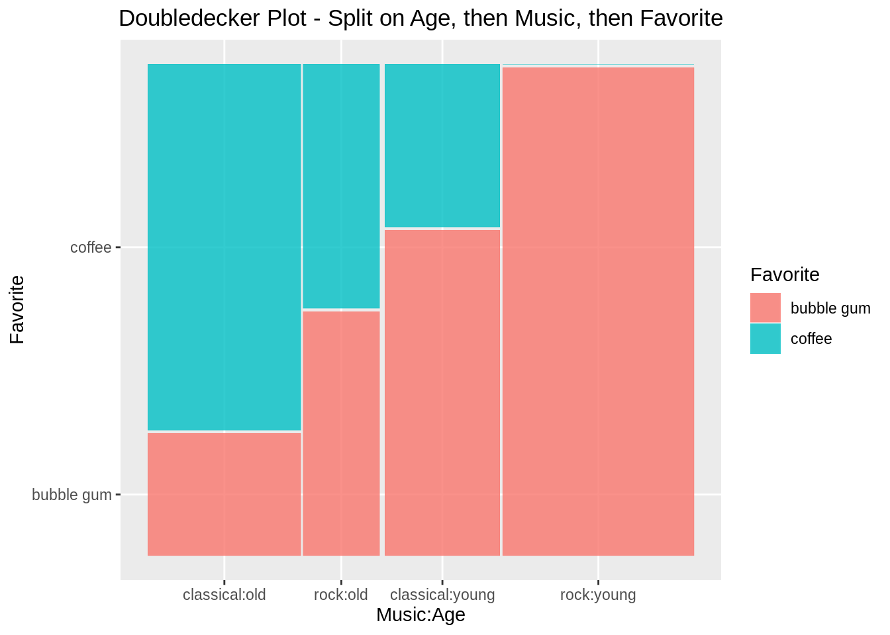

Chapter 15 ggmosaic
Qiang Zhao Mike Yao-Yi Wang
15.1 Overview
This cheat sheet is inspired by the Chapter 15 Chart: Mosaic of the edav.info. Instead of using the mosaic function from the package vcd to plot the mosaic plot, this cheat sheet shows how to achieve the same output through using ggmosaic.
15.2 Introduction
- Mosaic plot is only for categorical data
- Variables to put in
geom_mosaic:- weight: Count/Freq column
- x: product(Y, X2, X1)
- fill: dependent variable Y
- conds: conditional variable
15.3 Order of splits
The mosaic plot follows the hierarchical structure, thus the order of adding variables is very important. Below we will show a step by step splitting by adding one variable at the time. Before going through the example, one must install and call the package ggplot2 and ggmosaic.
library(ggplot2)
library(ggmosaic)
df_bin=data.frame(Age=c('old','old','old','old','young','young','young','young'),
Favorite=c(rep('bubble gum',2),rep('coffee',2),rep('bubble gum',2),rep('coffee',2)),
Music=c(rep(c('classical','rock'),4)),
Freq=c(1,1,3,1,2,5,1,0))
df_unbin = data.frame(Age =c(rep("old",6), rep("young", 8)),
Favorite = c(rep("bubble gum", 2),rep("coffee", 4), rep("bubble gum", 7), "coffee"),
Music = c("classical", "rock", rep("classical", 3), "rock", rep("classical", 2), rep("rock", 5), "classical"))15.4 Splitting on One Variable(binned data)
## Age Favorite Music Freq
## 1 old bubble gum classical 1
## 2 old bubble gum rock 1
## 3 old coffee classical 3
## 4 old coffee rock 1
## 5 young bubble gum classical 2
## 6 young bubble gum rock 5
## 7 young coffee classical 1
## 8 young coffee rock 0First, we will show the ggmosaic only split on Age:
Important: The ggmosaic can take binned data by assigning the weight = Freq column of the dataset at its aesthetics, it is not like vcd::mosaic(), which can only take binned data with count column name as Freq.
ggplot(data = df_bin)+
geom_mosaic(aes(x = product(Age), fill = Age, weight = Freq))+
labs(x= "Age", title = "Spliting on Age(binned data)")+
theme(plot.title = element_text(hjust = 0.5))
15.5 Splitting on One Variable(unbinned data)
However, for unbinned data, we could just ignore the weight and let it set to default.
The unbinned data:
## Age Favorite Music
## 1 old bubble gum classical
## 2 old bubble gum rock
## 3 old coffee classical
## 4 old coffee classical
## 5 old coffee classical
## 6 old coffee rock
## 7 young bubble gum classical
## 8 young bubble gum classical
## 9 young bubble gum rock
## 10 young bubble gum rock
## 11 young bubble gum rock
## 12 young bubble gum rock
## 13 young bubble gum rock
## 14 young coffee classicalggplot(data = df_unbin)+
geom_mosaic(aes(x = product(Age), fill = Age))+
labs(x= "Age", title = "Spliting on Age(unbinned data)")+
theme(plot.title = element_text(hjust = 0.5))
Note: We will use unbinned data for the rest of example
15.6 Splitting on Two Variables
Split on Age, then Music:
ggplot(data = df_unbin)+
geom_mosaic(aes(x = product(Music, Age), fill = Music))+
labs(x = "Age", y = "Music", title = "Spliting on Age, then Music")+
theme(plot.title = element_text(hjust = 0.5))
Split on Music, then Age:
ggplot(data = df_unbin)+
geom_mosaic(aes(x = product(Age, Music), fill = Age))+
labs(x= "Music", y = "Age", title = "Spliting on Music, then Age")+
theme(plot.title = element_text(hjust = 0.5))
For plotting mosaic plot on Y ~ X, we want to set x = product(Y, X) in aes as we always want to split the dependent variable last. We also need to set fill = Y as we want to color base on dependent variable.
15.7 Splitting on Three Variables
Split on Age, then Music, then Favorite:
ggplot(data = df_unbin)+
geom_mosaic(aes(x = product(Favorite, Music, Age), fill = Favorite))+
labs(x = "Favorite:Age", y = "Music", title = "Split on Age, then Music, then Favorite")+
theme(plot.title = element_text(hjust = 0.5))
Note that in the above example, by default the order of split and their directions as follows:
Age– vertical splitMusic– horizontal splitFavorite– vertical split
15.8 Adjusting the Direction of Splits
The directions can be adjusted as we want. For example, we want to create a doubledecker plot for the above example following below criteria:
Splitting order:
Age– vertical split (“hspine”)Music– vertical split (“hspine”)Favorite(dependent variable)– horizontal split (“vspine”)
ggplot(data = df_unbin)+
geom_mosaic(aes(x = product(Favorite, Music, Age), fill = Favorite),
divider = c("vspine", "hspine", "hspine"))+
labs(x = "Music:Age", y = "Favorite",
title = "Doubledecker Plot - Split on Age, then Music, then Favorite")+
theme(plot.title = element_text(hjust = 0.5))
Note that the divider vector is in order of which the variables appear in the product(Favorite, Music, Age), however the order of splits is Age, Music, then Favorite. Also note that in the divider vector, “vspine” = horizontal split and “hspine” = vertical split.
15.9 Alternative approach: Conditional
We can also use conditional property to achieve the same result as the above. In this case, geom_mosaic(aes(x = product(last_split), fill = last_split, conds = product(second_split, first_split)).
ggplot(data = df_unbin)+
geom_mosaic(aes(x = product(Favorite), fill = Favorite, conds = product(Music, Age)),
divider = c("vspine", "hspine", "hspine"))+
labs(x = "Music:Age", y = "Favorite",
title = "Doubledecker Plot - (Favorite | Music, Age)")+
theme(plot.title = element_text(hjust = 0.5))
15.10 Alternative approach: Facetting
We can also achieve similar result through facetting.
ggplot(data = df_unbin)+
geom_mosaic(aes(x = product(Favorite, Music), fill = Favorite))+
facet_grid(. ~Age)+
labs(x="Music", y = "favorite", title = "Favorite ~ Music and facet on Age")+
theme(plot.title = element_text(hjust = 0.5))
15.11 Comparison with vcd::mosaic
There are often confusions between ggmosaic:geom_mosaic and vcd:mosaic as the syntax for splitting order and splitting direction are quite different for the two. The vcd:mosaic follows the order of mosaic(last_split ~ first_split + second_split) and the direction vector in the order of splits is (first_split, second_split, third_split) with “v” being the vertical split and “h” being the horizontal split. However, ggmosaic:geom_mosaic follow the different pattern, the order of split is product(last_split, second_split, first_split) and the divider (similar to direction in vcd:mosaic) in the order of split is divider = c(last_split, second_split, first_split) with “vspine” being the horizontal split and “hspine” being the vertical split.
15.12 Chinese Translation: ‘ggmosaic’（马赛克图）
15.13 引言
这个文档是参考edav.info中第十五章节：马赛克图（Mosaic），引用其中的数据和例子。相较于edav.info中vcd包里的mosiac函数，我们准备使用ggmosiac来画马赛克图。
15.14 简介
- 马赛克图针对的是分类变量
- geom_maisc中的变量
- weight : 数据中的计数栏
- x : product（因变量，自变量2，自变量1）
- fill : 数据中的自变量栏
- conds : 条件变量
15.15 分割的顺序
马赛克图遵循等级分层结构，因此往product里面加变量的顺序极其重要。下面，我们会一步一步的展示如何正确的加入变量。我们首先要安装并且引用ggplot2和ggmosaic包。
15.16 根据一个变量分割（分箱数据）：
## Age Favorite Music Freq
## 1 old bubble gum classical 1
## 2 old bubble gum rock 1
## 3 old coffee classical 3
## 4 old coffee rock 1
## 5 young bubble gum classical 2
## 6 young bubble gum rock 5
## 7 young coffee classical 1
## 8 young coffee rock 0首先，我们根据年龄（Age）分割： 注意：ggmosaic可以通过weight来处理分箱数据，我们令weight等于数据中的计数栏（Freq）即可。vcd::mosaic也可以做到同样效果，但是计数栏的名称一定要为Freq。
ggplot(data = df_bin)+
geom_mosaic(aes(x = product(Age), fill = Age, weight = Freq))+
labs(x= "Age", title = "Spliting on Age(binned data)")+
theme(plot.title = element_text(hjust = 0.5))
15.17 根据一个变量分割(非分箱数据):
对于非分箱数据，我们应该忽略weight。下面是非分箱数据的读数:
## Age Favorite Music
## 1 old bubble gum classical
## 2 old bubble gum rock
## 3 old coffee classical
## 4 old coffee classical
## 5 old coffee classical
## 6 old coffee rock
## 7 young bubble gum classical
## 8 young bubble gum classical
## 9 young bubble gum rock
## 10 young bubble gum rock
## 11 young bubble gum rock
## 12 young bubble gum rock
## 13 young bubble gum rock
## 14 young coffee classicalggplot(data = df_unbin)+
geom_mosaic(aes(x = product(Age), fill = Age))+
labs(x= "Age", title = "Spliting on Age(unbinned data)")+
theme(plot.title = element_text(hjust = 0.5)) 注意：我们接下来的例子都是使用非分箱的数据
15.18 根据两个变量分割
我们首先根据年龄(Age)分割，然后再根据音乐种类(Music)分割:
ggplot(data = df_unbin)+
geom_mosaic(aes(x = product(Music, Age), fill = Music))+
labs(x = "Age", y = "Music", title = "Spliting on Age, then Music")+
theme(plot.title = element_text(hjust = 0.5)) 下面这个例子是先分割音乐种类(Music)，再分割年龄(Age):
下面这个例子是先分割音乐种类(Music)，再分割年龄(Age):
ggplot(data = df_unbin)+
geom_mosaic(aes(x = product(Age, Music), fill = Age))+
labs(x= "Music", y = "Age", title = "Spliting on Music, then Age")+
theme(plot.title = element_text(hjust = 0.5))
如果我们想画因变量Y关于自变量X的马赛克图，我们应该设aes中的x=prod(Y,X)。我们要保证因变量是最后一个被划分的。而且, 我们也要使得fill=Y，因为我们注重的是因变量Y的分布。
15.19 根据三个变量分割
我们首先划分年龄(Age),然后划分音乐种类(Music)，最后划分喜好(Favorite)。
ggplot(data = df_unbin)+
geom_mosaic(aes(x = product(Favorite, Music, Age), fill = Favorite))+
labs(x = "Favorite:Age", y = "Music", title = "Split on Age, then Music, then Favorite")+
theme(plot.title = element_text(hjust = 0.5)) 注意：在上面的例子当中，系统默认的切割方向以及顺序如下:
注意：在上面的例子当中，系统默认的切割方向以及顺序如下:
- 年龄(Age): 垂直切割
- 音乐种类(Music): 横向切割
- 喜好(Favorite): 垂直切割
15.20 调整切割的方向
我们可以随意改变任意变量的切割方向。比如，我们打算用上面的例子绘画一个双层结构图(DoubleDecker Plot)。 切割顺序为：
- 年龄(Age): 垂直切割 (‘hspine’)
- 音乐种类(Music): 垂直切割 (‘hespine’)
- 喜好(Favorite): 横向切割 (‘vspine’)
ggplot(data = df_unbin)+
geom_mosaic(aes(x = product(Favorite, Music, Age), fill = Favorite),
divider = c("vspine", "hspine", "hspine"))+
labs(x = "Music:Age", y = "Favorite", title = "Doubledecker Plot - Split on Age, then Music, then Favorite")+
theme(plot.title = element_text(hjust = 0.5))
注意：divider中的切割方向分别对应product(Favorite,Music,Age)。但是实际上的切割顺序还是年龄(Age)，音乐种类(Music)，喜好(Favorite)。divider中的’vspine’表示横向切割；’hspine’表示垂直切割。
15.21 另外一种方法:条件变量(Conditional)
我们可以使用条件(conds)的属性来达到与上面例子相同的效果。 geom_mosaic(aes(x = product(最后一次切割), fill = 最后一次切割, conds = product(第二次切割, 第一次切割)).
ggplot(data = df_unbin)+
geom_mosaic(aes(x = product(Favorite), fill = Favorite, conds = product(Music, Age)),
divider = c("vspine", "hspine", "hspine"))+
labs(x = "Music:Age", y = "Favorite",
title = "Doubledecker Plot - (Favorite | Music, Age)")+
theme(plot.title = element_text(hjust = 0.5))
15.22 另外一种方法:块化(Facet)
ggplot(data = df_unbin)+
geom_mosaic(aes(x = product(Favorite, Music), fill = Favorite))+
facet_grid(. ~Age)+
labs(x="Music", y = "favorite", title = "Favorite ~ Music and facet on Age")+
theme(plot.title = element_text(hjust = 0.5))
15.23 ‘ggmosaic’ vs vcd::‘mosaic’
我们很容易搞混’ggmosaic’和‘mosaic’的切割顺序和切割方向。 对于‘mosaic’来说，切割顺序服从公式’mosaic(最后一个切割~第一个切割+第二个切割)’，而且切割方向的变量也是对应着direction=(第一个切割的变量，第二个切割的变量，最后一个切割的变量)。其中’v’表示的是垂直切割,’h’表示的是横向切割。 但是这和‘ggmosaic’有着很大的不同。在‘ggmosaic’中，切割应服从’product(最后一个切割，第二个切割，第一个切割)’的一个倒叙顺序。而且切割方向的变量也对应着divider=(最后一个切割的变量，第二个切割的变量，第一个切割的变量)。其中’vspine’表示横向切割，‘hspine’表示垂直切割。